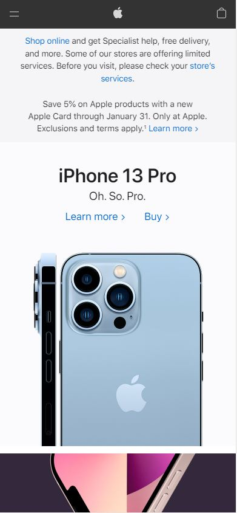

Repetition
Xbox
Xbox Home PageI think that this home page does a great job of the principle of repetition. When you first view it, you can see good white space, but also a consistant feel and tone. This is helped by the use of a consistant color scheme. You can also see how the buttons all have a similar feel and fall into place. There is a great sense of repetition.
Contrast
Apple
Apple Home Page When you look at this home page, it is easy to see how well the colors, images and white space all work together. There are no words that are hard to read and all of the colors seem very intentional. It just has such a polished look to it and think it has a very good feel.
White Space and Clean Design
I have an example of Googles 'maps' feature becuase I wanted to show it in action, but we all know that Google does a great job of using White space and being clean. Their home page is exactly what it needs to be, just their logo, a search bar, and thats it. Simplicity really goes a long way in this industry. Even when using an app from them like this maps feature, you only have on screen what you need and I like that.